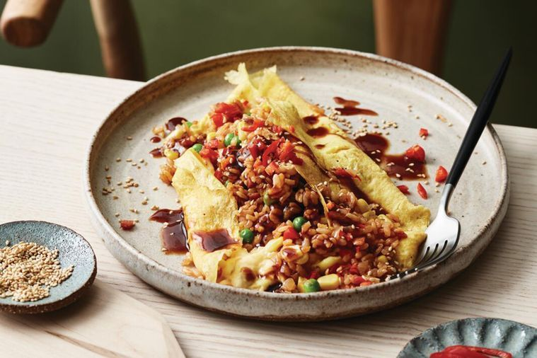
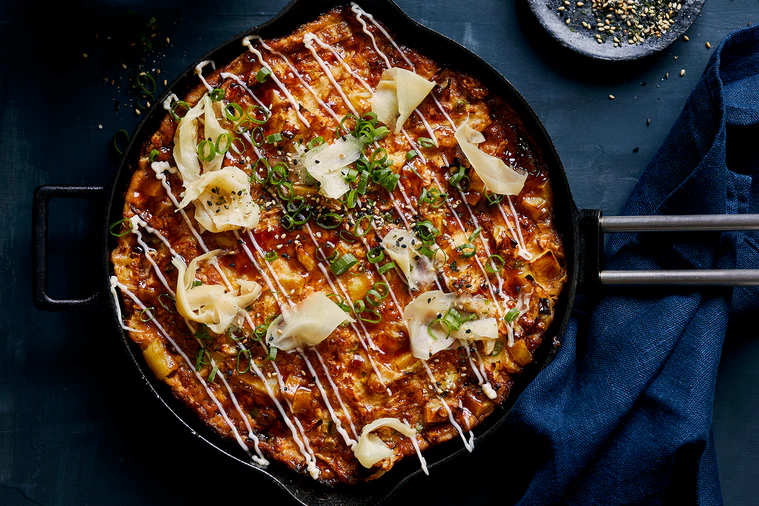
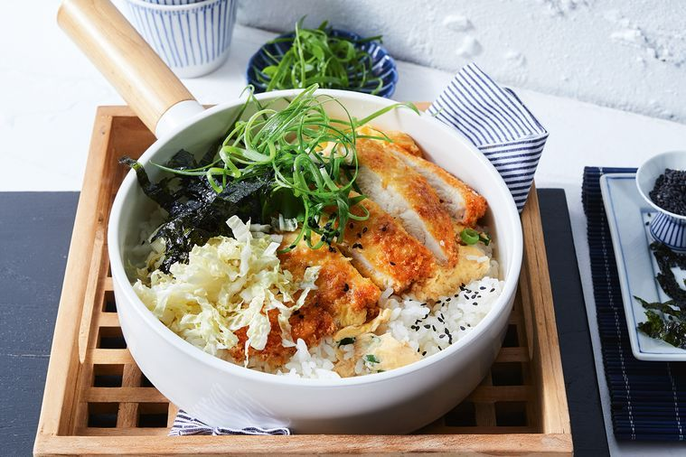

Fried rice omelette
“I love a runny, fluffy omelette, but they can leave you feeling hungry. This one feels like a real meal with its fried rice filling. It’s perfect to use up any leftover veg from the fridge or freezer and is ready in no time.”
Ingredients
- 3 tsp vegetable oil
- 50g bacon, chopped
- 1 small onion, finely chopped
- 1 cup leftover cooked sushi rice
- 2/3 cup (80g) frozen corn and pea mix
- 1 tbs tomato sauce
- 3 tsp soy sauce
- 6 eggs
- 2 tbs milk
- Tonkatsu sauce, toasted sesame seeds and finely chopped and sliced red chilli, to serve
Steps
- Heat 1 tsp oil in a large frypan over medium-high heat. Cook bacon, stirring occasionally, for 4 minutes or until golden. Add onion and cook, stirring, for 3 minutes or until softened. Add rice and vegetables and stir-fry for 2-3 minutes until warmed through. Add tomato and soy sauce and stir-fry for 1 minute or until well combined. Cover to keep warm.
- Whisk eggs and milk in a large bowl until smooth. Heat a medium non-stick frypan over high heat until very hot. Add 1 tsp oil and swirl to coat pan. Pour half the egg mixture into the hot pan and immediately whisk egg mixture with 2 chopsticks in a small circular pattern until there is a thin base of cooked egg but remaining egg is still slightly runny. Remove from heat and slide out onto a serving plate. Spoon half the rice and vegetable mixture along centre, then fold egg up over slightly to cover.
- Repeat to make a second omelette. Drizzle with tonkatsu sauce, sprinkle with sesame seeds and chilli, and serve.
Okonomiyaki
"This massive minimal-waste savoury treat is best enjoyed with plenty of kewpie!"
Ingredients
- 1 cup (150g) self-raising flour
- 1 tsp baking powder
- 2 large eggs, at room temperature, whisked
- 1 tbs miso paste (any variety)
- 500g baby wombok, halved lengthwise, core removed and thinly shredded
- 220g potato, peeled, finely chopped
- 4 long green shallots, thinly sliced, white and green parts separated
- 1/3 cup (80ml) vegetable oil
- 1/3 cup (80ml) tonkatsu sauce
- 1 tbs Kewpie mayonnaise
- 1/4 cup (35g) shaved natural pickled ginger (from Asian grocers)
- 2 tsp furikake (Japanese rice seasoning, from Asian grocers)
Steps
- Place flour and baking powder in a large bowl and whisk to combine. Place eggs, miso and 350ml cold water in a large jug and whisk until well combined and smooth. Add to the flour mixture and whisk until batter is completely smooth.
- Place wombok, potato and white part of shallot in a large bowl. Toss to combine. Add batter, toss until well combined and vegetables are evenly coated.
- Heat oil in a 24cm ovenproof frypan over medium-high heat. Pour cabbage mixture in, spreading to evenly cover base of pan and pressing down firmly to level top. Cook, gently shaking pan occasionally, for 10-12 minutes until a deep golden crust forms underneath and pancake has cooked almost all the way through but top is still wet and there’s a slight wobble at the centre.
- Meanwhile, preheat oven grill to high and place oven rack on middle shelf. Transfer pan to oven grill. Grill, untouched, for 5-7 minutes until pancake is cooked and deep golden on top.
- Remove from grill and immediately brush surface with tonkatsu to glaze. Drizzle with mayonnaise and sprinkle with pickled ginger, green part of shallot and furikake. Serve immediately.
Chicken katsu don
“Ice-cold beer and chicken katsu don – doesn’t get much better! I like to serve my katsu with some chilli oil for a kick of heat."
Ingredients
- 1 1/2 cups (330g) sushi rice
- 2 small (about 500g) free-range chicken breasts
- 4 eggs
- 1/2 cup (75g) plain flour
- 1 1/2 cups (75g) panko breadcrumbs
- 1 tbs red miso paste
- Sunflower oil, to shallow fry
- 4 long green shallots, white part finely chopped, green part shredded
- Shredded toasted nori sheets & black sesame seeds, to serve
- 2 tbs rice wine vinegar
- 2 tsp sesame oil
- 1/4 wombok cabbage (about 325g), shredded
Steps
- Cook the sushi rice according to packet instructions. Set aside, covered, and keep warm until ready to serve.
- Slice the chicken breasts in half horizontally to create 4 thin pieces. Whisk 2 of the eggs in a medium bowl, and place flour and panko breadcrumbs in 2 separate bowls. Dust each piece of chicken in flour, dip in the whisked egg, then cover in breadcrumbs, pressing to coat the chicken completely. Place on a tray and chill for 10 minutes to firm.
- Meanwhile, combine miso paste with 3/4 cup (180ml) of boiling water in a jug, stir, and set aside.
- For the cabbage salad, place sunflower oil, rice wine vinegar and sesame oil in a medium bowl and whisk to combine. Add cabbage, toss to coat and set aside until ready to serve.
- Heat 2cm of sunflower oil in a large frypan over medium heat. Working in batches, fry chicken for 5-6 minutes, turning once, until golden. Drain on paper towel and season. Set aside.
- Add half the miso broth and half the whites of the long green shallot to a clean, large frypan and bring to a boil. Beat the remaining 2 eggs together in a jug. Place two of the chicken pieces in the pan and carefully pour over half the beaten egg on and around chicken. Turn up the heat to medium-high, cover and cook for 3 minutes or until egg is just set. Using a wide fish slice, scoop up chicken katsu and some of the egg and remove from pan and chop each piece into 5 even slices. Repeat with remaining chicken, miso, shallot and egg.
- Meanwhile, combine 1 tbs sunflower oil, rice wine vinegar and sesame oil in a small bowl. Season, then toss through cabbage.
- Divide warm rice among serving bowls and top with 5 slices of chicken and some cabbage. Scatter over shredded long green shallot, nori and sesame seeds, to serve.